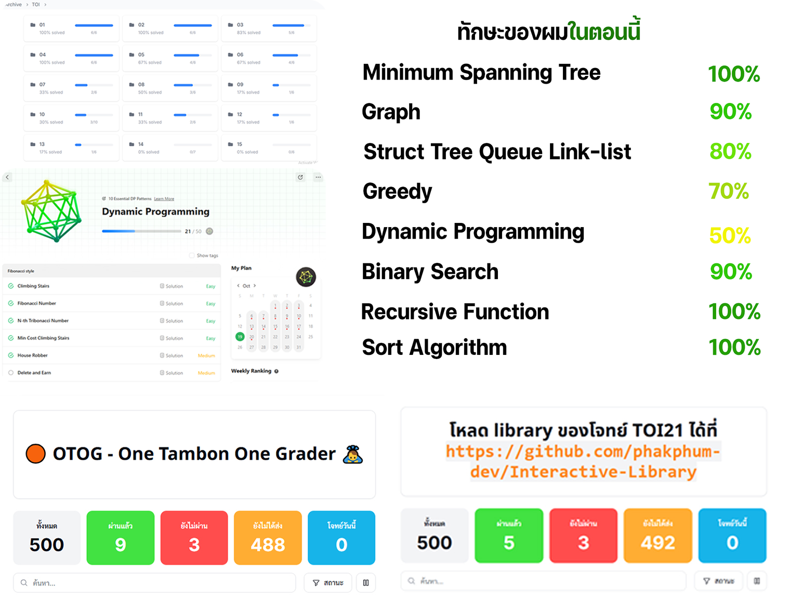
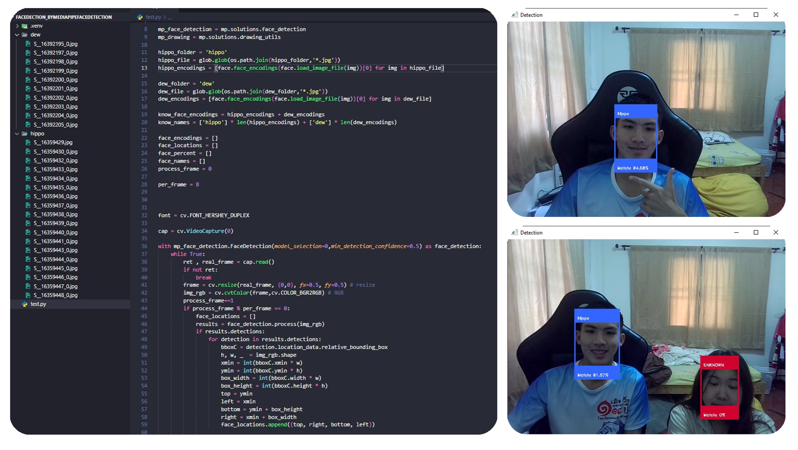
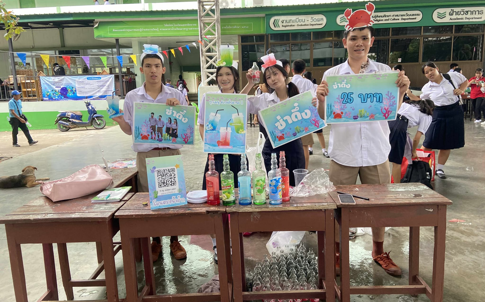
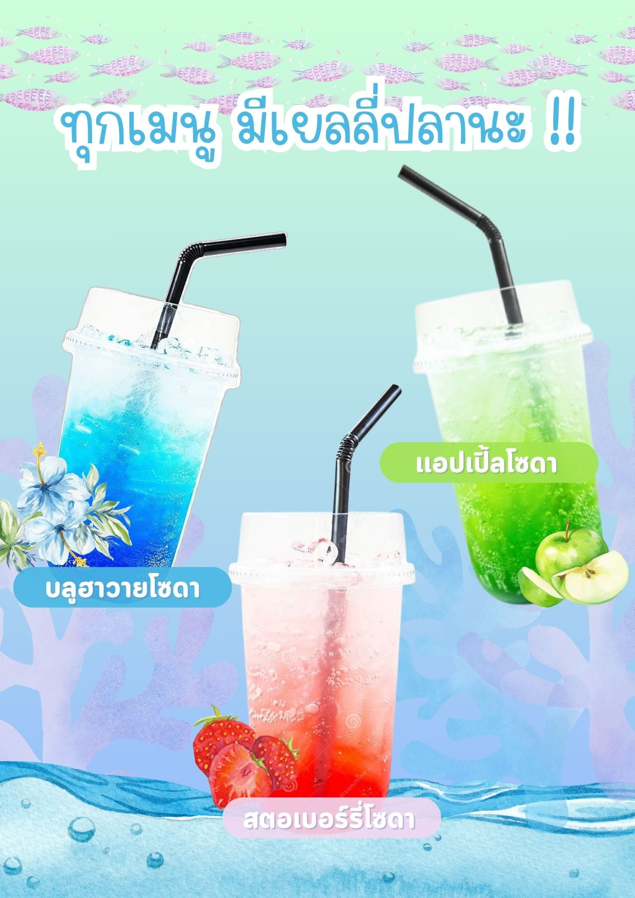

ด้านคอมพิวเตออร์ และ Coding
ฝึกทักษะCodingแก้โจทย์ปัญหาเพื่อฝึก Algorithm Programming
ทำระบบแสกนหน้า Face Detection จดจำใบหน้า
หลักการ
ผมใช้ภาษา Python ในการเขียนผมได้ใช้ Image Processing OpenCV ในการ Detection หน้าของผมและเมื่อ Detect ได้ผมจะนำภาพไปให้ Model AI ประมวลผลว่ารูปนั้นตรงกับหน้าตาของผมประมาณกี่เปอร์เซ็นต์ถ้าเกิน 90%ผมจะทำการถ่ายภาพไว้และนำไปประยุกต์ต่อไปในโครงงานอื่น ๆ
กิจกรรมอื่นๆ
กิจกรรม Friday Market ขายน้ำผลไม้โซดา
 เรื่องราว story
กิจกรรม Friday market นั้นจะจัดทุกวันศุกร์และให้นักเรียนเอาของมาขายในโรงเรียนครับพวกเราเลือกที่จะขายน้ำโซดาเพราะคิดว่าเวลาทุกคนซื้อของกิน ทุกคนต้องซื้อน้ำด้วยอย่างบางคนเผ็ดก็ต้องกินน้ำ เลยคิดว่าน้ำเป็นสิ่งจำเป็นเรียกได้ว่าเป็นเครื่องเคียง เราขายน้ำผลไม้โซดาและตั้งราคา 25บาท เป็นราคาที่นักเรียนจับต้องได้ พวกเราขายได้เงินมาทั้งหมด 2500บาทครับ จากทุนทั้งหมด 400-500บาท และพวกเราก็เอากำไรที่ได้หาร 4 แบ่งกันครับ